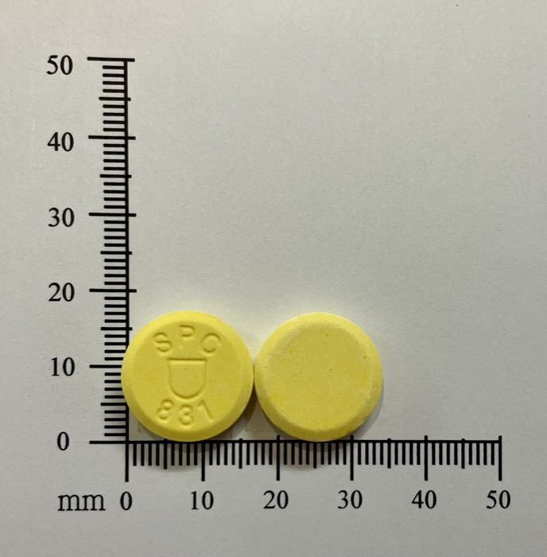
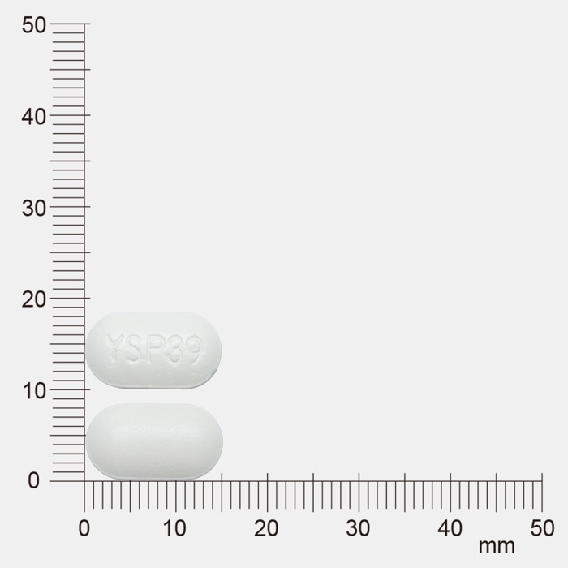
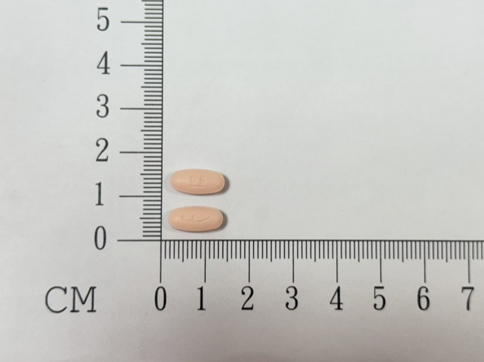
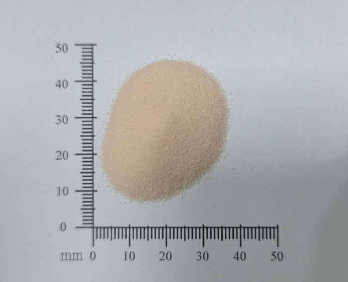
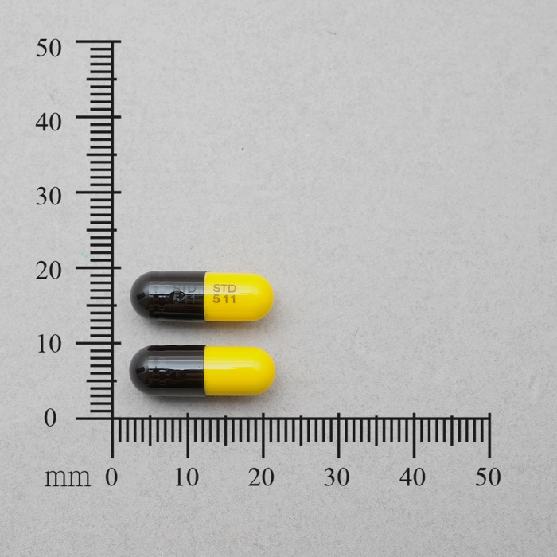
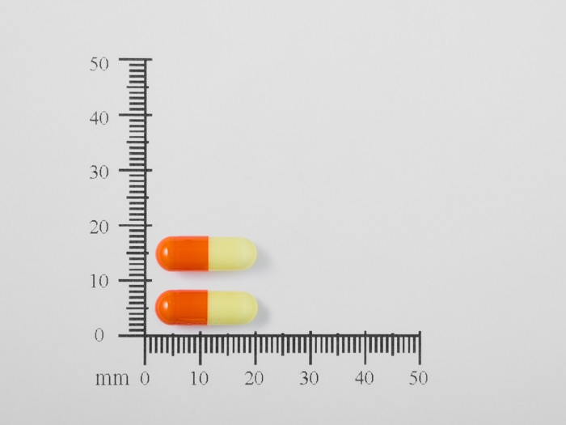
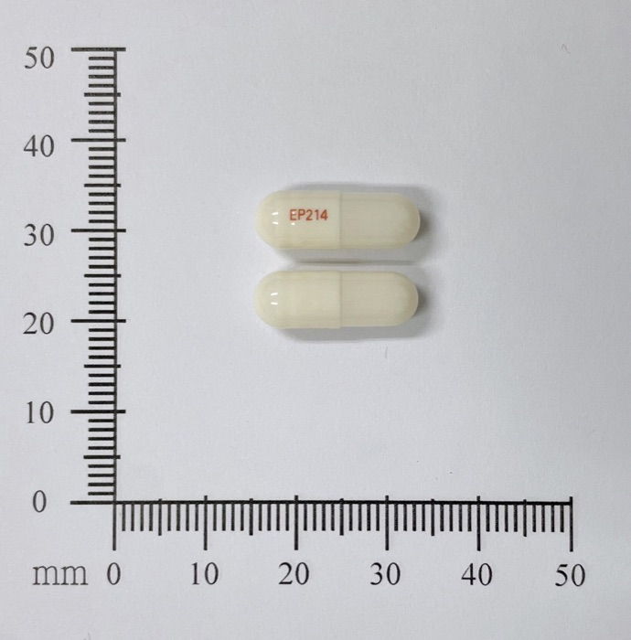
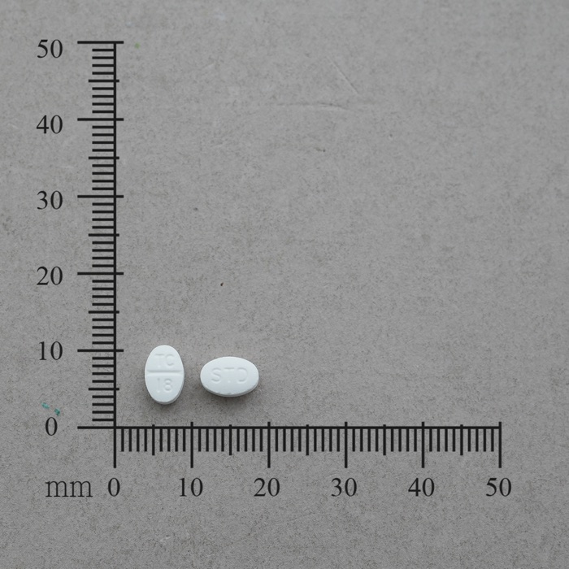
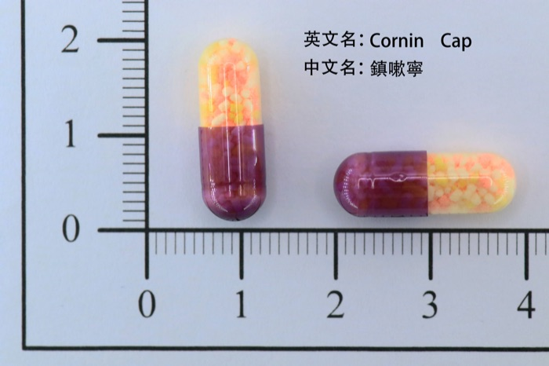
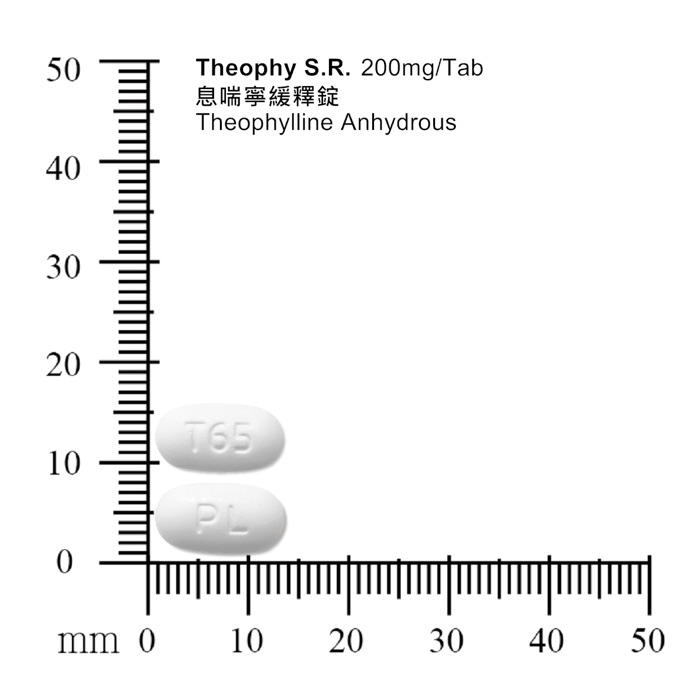

Her ten medicines
Reference photos from the Taiwan FDA open pill-appearance dataset. For the Kinly demo only.

喉片 SUCIN TROCHES · 舒清喉錠 黃 · 圓形 · SPC 831 stand-in: the label only says 喉片 (lozenge), brand unknown 
CEFLOUR 250mg CEFLOUR FILM COATED TABLETS 250MG · 喜華 膜衣錠２５０公絲 白 · 橢圓形 · YSP39 
allegra 60mg ALLEGRA 60MG TABLETS · 艾來６０公絲錠劑 粉 · 橢圓形 · 06 
化痰粉 ACTEIN 200mg ACTEIN GRANULES 66.7MG/GM · 愛克痰顆粒６６．７毫克/公克 橘 · 顆粒劑、粉劑或散劑 granules; 66.7 mg/g x 3 g sachet = 200 mg 
soma 250/150 SOMA CAPSULES "STANDARD" · "生達" 舒肌痛膠囊 黑 · 膠囊 · STD 511 / STD 511 
transamin 250mg TRANSAMIN CAPSULES · 斷血炎膠囊 橘 · 膠囊 
Lanpo 15mg Lanpo Capsules 15mg "EVEREST" · 永勝佳胃膠囊15毫克 白 · 膠囊 · EP214 
CLATINE TABLET 10MG CLATINE TABLET 10MG "STANDARD"(LORATADINE) · "生達" 宜敏靜錠１０公絲（樂雷塔定） 白 · 橢圓形 · TC 18 / STD 
cornin CORNIN CAPSULES "ROYAL" · "皇佳"鎮嗽寧膠囊 紫 · 膠囊 
TELIN 200mg Theophy S.R. Tablets 200mg "P.L." · "培力"息喘寧緩釋錠200毫克 白 · 橢圓形 · PL / T65 stand-in: TELIN is not in the dataset; this is another 200 mg tablet, for the demo only